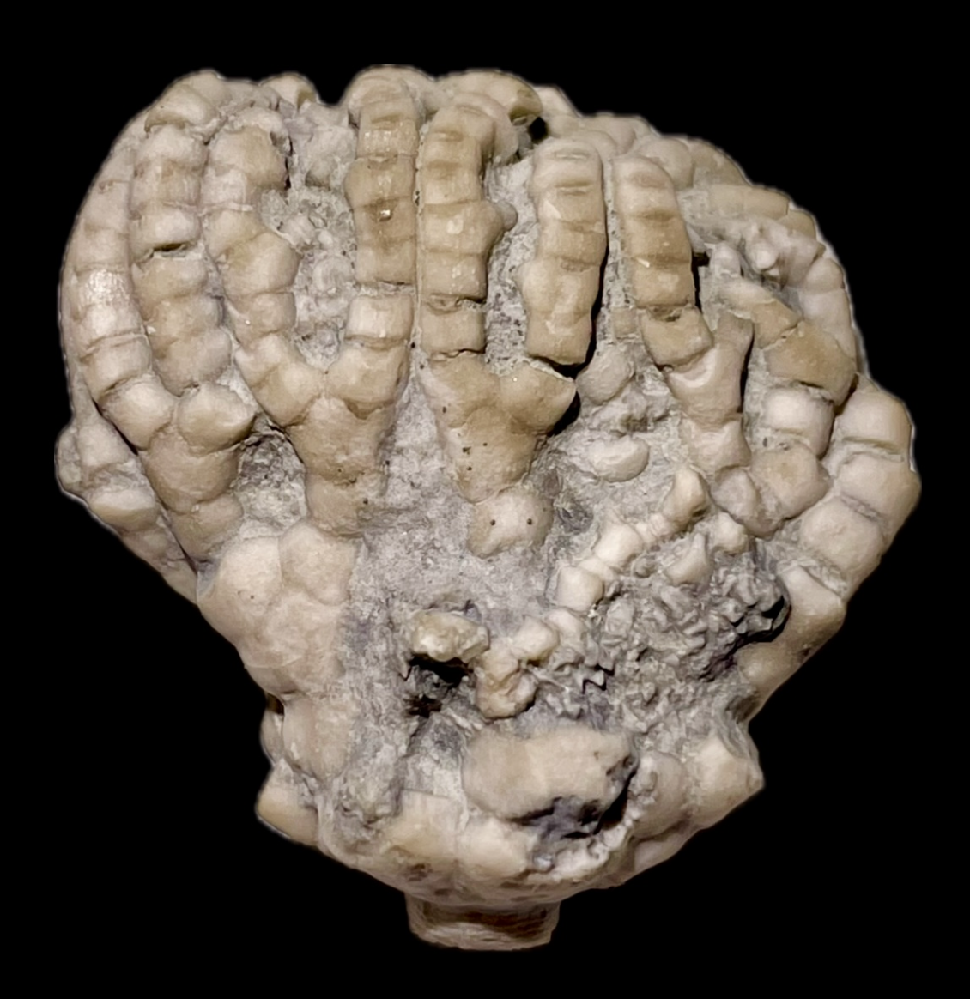

Crinoid
Size: 2.7 cm crown
This crinoid is one of two unusual Flexible species found in the LaSalle crinoid fauna and closely-related to the familiar Mississippian flexibles such as Taxocrinus, in that the presence of a distinct anal tube arising from the CD interarray clearly assigns it to the Taxocrinoidea. Its most interesting feature is the secondary ramules given off by the tertibrachials, which form a biendotomous branching pattern in the upper-half of the crown. |
 |
|---|
Copyright © 2024 by Samuel Kim, all rights reserved